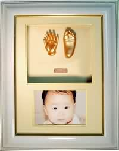

Welcome to Happy Olina
- To capture a moment for your babies. To create a ideal memory for your parents.
- To have something special for your families. To have a good gift for your friends.

Babies are growing very qucikly, let's come and have this sculpture keepsake down, keep a good memory for the baby before they grows.we are creating exciting sculpture of your babies' hand and feet and good memories is starting here.......
Also if you would like to have special gift for your family, firend on a special day. We are ready for you, located in south of Brisbane, Happy Olina. All you need to do is choose the best product you perfer to and we will take care of the rest to have this priceless gift ready for you.
If you have special requirements, we are more than happy to discuss with you and accommodate your needs.
The highest quality sculptures plus beautiful picture frames will keep your love forever.
Simply call 07 3711 6840 to make an appointment.